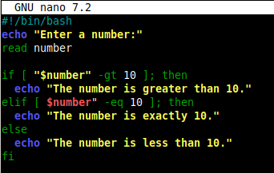

If/else structure.
Turn repetitive terminal tasks into small, reusable programs. Learn the shebang, variables, conditionals, loops, and functions — then apply them with real examples.
Bash (Bourne Again Shell) is both a command language and a shell for Unix-like systems. Bash scripting means writing a sequence of commands into a file so they can run together — automating file work, user input, loops, and system admin tasks.
Bash scripting turns repeatable steps into clean, versionable scripts that manage systems and solve problems using built-in Unix tools.
The first line #!/bin/bash (the shebang) tells the OS to run the file with Bash. Make it executable and run it:
#!/bin/bash
# file: script.sh
echo "Hello from Bash"chmod +x script.sh
./script.shname="Mark"
echo "Hi, $name!"
read -p "Your favorite distro? " distro
echo "Nice choice: $distro"read -p "Enter a number: " n
if [ "$n" -gt 10 ]; then
echo "Greater than 10"
elif [ "$n" -eq 10 ]; then
echo "Exactly 10"
else
echo "Less than 10"
fiFor — when you know the iteration set; While — continue while condition is true.
# for over values
for i in 1 2 3; do
echo "Number $i"
done
# for over files in a folder
for f in *.log; do
echo "Found: $f"
done
# while loop
count=0
while [ $count -lt 3 ]; do
echo "Count: $count"
count=$((count+1))
donegreet(){
echo "Hello, $1!"
}
greet "Mark"Functions help you organize code, avoid repetition, and reuse logic across scripts.
#!/bin/bash, then set -euo pipefail for safer scripts."$var". Prefer $(cmd) over backticks.main(); return exit codes with exit.echo or printf; use comments generously.#!/bin/bash
set -euo pipefail
log(){ printf "[%s] %s\n" "$(date +%T)" "$*"; }
main(){
log "Starting"
# work goes here
log "Done"
}
main "$@"We covered the essentials of Bash scripting — shebang, variables, input, conditionals, loops, and functions — then applied them in practical examples. Keep experimenting and check man bash for deeper options.